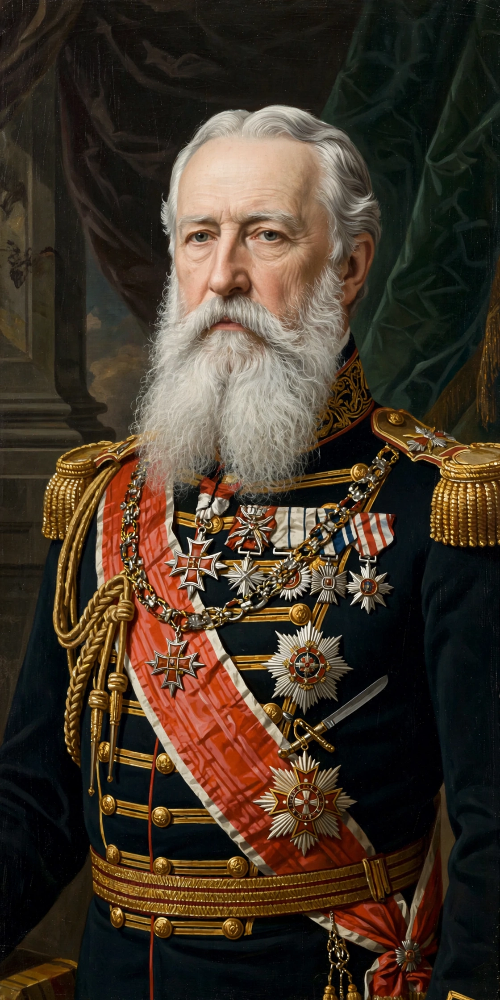

Leopold II (9 April 1835 – 17 December 1909) was the second King of the Belgians, reigning from 1865 to 1909. He is chiefly remembered as the founder and sole owner of the Congo Free State, a private colonial project whose rubber regime caused millions of deaths and drew international condemnation.

| Leopold II | |
|---|---|
| Reign | 17 December 1865 – 17 December 1909 |
| Predecessor | Leopold I |
| Successor | Albert I |
Through Henry Morton Stanley and front organisations, Leopold gained recognition of his personal rule over the Congo at the Berlin Conference of 1884–85. Forced labour for ivory and rubber, enforced by the Force Publique, led to a demographic catastrophe — estimates of excess deaths commonly range up to 10 million — and campaigns by E. D. Morel, Roger Casement and Joseph Conrad's Heart of Darkness. Belgium annexed the territory in 1908.
At home Leopold oversaw major building projects in Brussels and Ostend, earning the nickname Builder King. See Congo Free State and Atrocities in the Congo Free State.